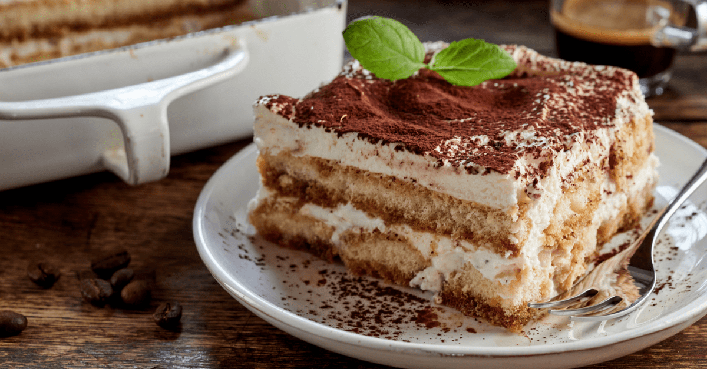

Tiramisu

Description
Tiramisu is a traditional Italian dessert. Comprised of rows of rich, coffee-infused Saviordi biscuits interspersed with layers of a fluffy, sweetend mascarpone, its name literally translates as "pick me up"!
Ingredients
- 2 XL FRESH eggs
- 250g of mascarpone cheese
- 100g of Saviordi biscuits
- 2 tablespoons of white sugar
- 350ml of espresso coffee (prepared earlier and cooled to fridge temperature)
- 1 block of dark chocolate
- Cocoa powder
Steps
- Make your fresh coffee and allow it to cool to fridge temperature (this should take around 2hrs).
- Separate the egg whites from the yolks, place them in separate medium mixing bowls, and add 1tbsp of white sugar to each.
- Wisk each bowl individually (white THEN yolk) until they are foamy and fluffy.
- Add 125g of mascarpone to each bowl, and fold it through using a spatula in each bowl individually (white THEN yolk).
- Dip your Saviordi biscuits into your coffee (3 seconds on each side) and gently line the bottom of a rectangular Pyrex dish with them so that there are no gaps.
- Slowly pour the egg yolk mixture over the top of the layer of Saviordi biscuits, using a spatula to spread it over any gaps.
- Gently dust some cocoa powder over the top until it is completely covered before grating some dark chocolate over the cocoa powder.
- Repeat steps 5-7 once more, this time using the egg white mixture.
- Leave the Pyrex dish in the fridge for up to 24hr to set - the longer you leave it, the better it sets.
- Once the Tiramisu has set, cut out a generous piece using a spatula and gently place it on a plate. Add a dusting of cocoa powder and grated dark chocolate to serve.